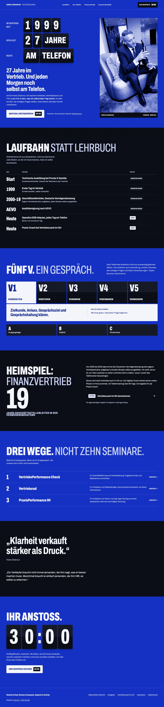
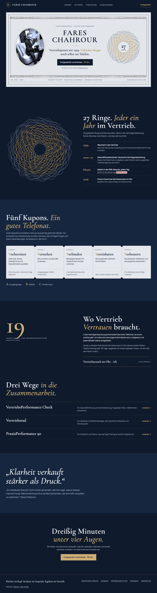
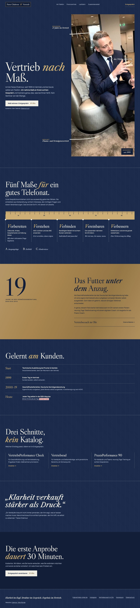
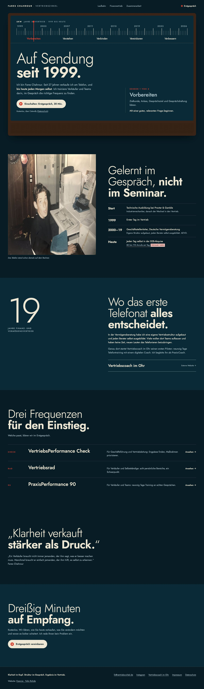

Gleicher Inhalt, vier Welten. Jede Seite ist ein echter Entwurf und auf Desktop (1440) und Mobile (390) gerendert. Alle Fakten stammen aus der bisherigen Seite, Granola und Fares' WhatsApp-Sätzen.
Gewählt am 21.11.: A · Anzeigetafel. Sie zeigt in der ersten Sekunde, was Fares ausmacht: seit 1999, 27 Jahre, heute am Telefon. Das Blau trennt ihn klar vom Bernstein von Coach im Ohr, und die Seite braucht kein Logo, um zu wirken. Wenn die Zielgruppe Vermögensberater zuerst Seriosität sehen soll, ist B die sichere Alternative.

A · ohne Logo · Empfehlung
Die Stadiontafel des Vertriebs, ganz in Signalblau. Klappziffern zählen 1999 und 27 Jahre hoch; die fünf V sind Spielabschnitte zum Antippen; das Erstgespräch ist die Spieluhr 30:00.
Risiko: sportlich und laut. Für sehr konservative Entscheider braucht es die ruhigen dunklen Abschnitte, die schon drin sind.

B · am Logo orientiert
Sicherheitsdruck aus der Finanzwelt: Tinte, Gold, Guilloche. Die Rosette hat 27 Ringe, einen pro Jahr; die neunzehn Jahre Vermögensberatung sind golden. Die fünf V sind die Kupons einer Anleihe.
Risiko: liegt nah am heutigen Kanzlei-Look und an Privatbank-Klischees.

C · am Logo orientiert
Vertrieb nach Maß: Nadelstreifen-Tuch, Kreidestriche auf Fares' Foto, Heftnähte als Trennlinien, das goldene Futter als Abschnitt zum Finanzvertrieb. Die fünf V liegen auf einem Maßband.
Risiko: lebt vom Foto. Mit den neuen Anzugfotos wird es stark, mit dem alten Handyfoto bleibt es unter seinen Möglichkeiten.

D · ohne Logo
Die Stimme als Instrument: eine Radioskala von 1999 bis heute, die fünf V sind Sender, die Nadel lässt sich ziehen. Darunter das Jugendfoto mit dem Telefon auf dem Rechner.
Risiko: nostalgisch. Im ersten Bildschirm ist Fares nicht zu sehen.
Briefing und Quellen: BRIEFING.md. Website-Bau: Ezencia · Felix Rohde.